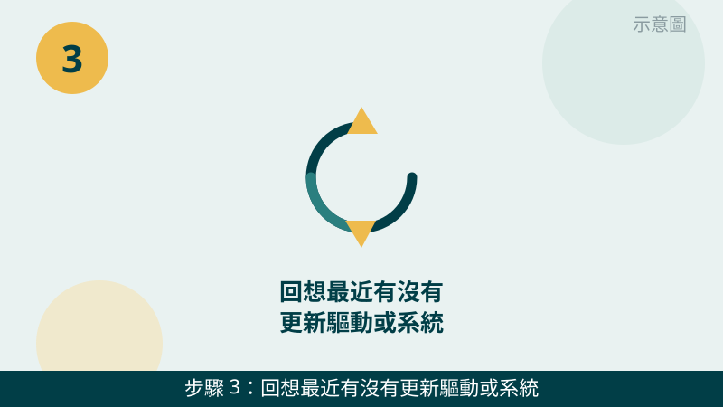

筆電螢幕閃爍、花屏、出現橫紋，確實會讓人擔心是不是螢幕壞了要整台換。但請先放心：閃爍花屏的原因有很多種，不一定是面板損壞。先照下面的順序檢查，一步一步縮小範圍，判斷會清楚很多。
開始之前先跟您說明一個判斷原則：「外接螢幕會不會一起閃」和「開合角度會不會改變症狀」是兩條最重要的線索。外接也一起閃，往顯卡與驅動方向想；只有筆電螢幕閃、而且開合角度會改變症狀，就往排線方向想。您先記住這兩個測試，檢查時會很有方向。
閃爍的影片先傳給我們看
錄一段 10 秒左右的閃爍影片，連同外接螢幕測試的結果一起傳 LINE，通常能先分清是驅動、排線還是面板方向。先免費評估、報價透明，確認後再預約維修。
筆電螢幕閃爍花屏自救檢查清單（由簡到難）
- 1. 先接外接螢幕測試，這是最關鍵的一步。請用傳輸線把筆電接到電視或外接螢幕上，看外接畫面會不會一起閃。怎麼判斷：外接畫面正常、只有筆電螢幕閃，問題多半在筆電螢幕或排線方向；外接也一起閃，就往顯卡與驅動方向想。這個結果請先記下來，傳 LINE 時一起告訴我們。
示意圖（非官方截圖） - 2. 調整螢幕更新率試試看。請到「設定」→「系統」→「顯示器」→「進階顯示」，看看更新率選項，換一個選項試試。怎麼判斷：換了更新率就不閃了，就是更新率與驅動搭配的問題；換了還是一樣閃，再往下一步查。操作步驟不確定，就先拍照問我們，不要亂按其他設定。
示意圖（非官方截圖） - 3. 回想最近有沒有更新驅動或系統。如果閃爍是某次更新完才開始的，往驅動方向想的可能性就很高。驅動重裝的方向是：先把閃爍影片與更新時間拍照傳給我們，我們幫您判斷再建議下一步。怎麼判斷：更新時間與開始閃爍的時間對得上，就是重要線索。提醒您：不要自己到處下載來路不明的驅動程式，裝錯反而更麻煩。

示意圖（非官方截圖） - 4. 輕輕開合螢幕，看症狀會不會跟著變。請輕輕地、慢慢地改變開合角度，觀察閃爍有沒有變嚴重或消失。怎麼判斷：某個角度特別嚴重、某個角度又正常，多半是排線接觸問題；角度怎麼變都一樣閃，比較像面板或顯卡方向。注意：輕輕試就好，不要用力掰螢幕。
示意圖（非官方截圖） - 5. 檢查螢幕外觀有沒有破裂或漏液。請仔細看螢幕的角落與邊緣，有沒有裂痕、黑斑擴散、或液體痕跡。怎麼判斷：有裂痕、黑斑或漏液痕跡，就是面板損傷，請不要按壓、也不要再用力開合，先拍照傳給我們判斷。
示意圖（非官方截圖） - 6. 把閃爍情形錄影記錄下來，連同測試結果一起傳給我們。請用手機錄一段 10 秒左右的閃爍影片，並記下外接測試結果與開合角度變化。怎麼判斷：影片能看出是全螢幕閃、局部花屏、還是橫紋直紋，判斷方向差很多，傳給我們會比用文字描述快得多。
示意圖（非官方截圖）
別再自己試了，出現這些情況請立刻停手
- 螢幕有破裂或漏液——請不要按壓、不要再用力開合，先拍照傳給我們判斷
- 想自己拆面板或排線但不確定怎麼拆——請先拍照問我們，不要硬拆，拆壞排線或面板反而更貴
- 閃爍同時伴隨焦味或異音——請立刻停用，不要再開機測試
- 網路上教的驅動下載或修復工具來路不明，不要隨便下載安裝，以免越修越糟
如果您的筆電是摔到、壓到之後才開始閃爍，也請順手檢查一下外觀與轉軸：外力造成的排線鬆動，和單純的驅動問題處理方式完全不同。我們的檢測會把外接測試、排線、面板一起交叉比對，找出真正的原因再報價給您。
常見問題
台中筆電螢幕閃爍花屏，是不是螢幕壞了要整台換？
不一定。螢幕閃爍可能是驅動或更新率設定問題，也可能是排線接觸不良，真正面板損壞只是其中一種可能。先照本文 6 步做外接測試與開合角度觀察，結果拍照或錄影傳給我們，評估不收費，確認原因後再報價給您決定。
開合角度會改變閃爍，是排線問題嗎？
很有可能。開合角度一變、閃爍就跟著變嚴重或消失，通常代表連接螢幕與主機的排線有接觸不良或磨損。不過排線拆換需要拆機，不建議您自己拆，先把不同角度的影片傳給我們判斷，檢測費 $300，有修全額折抵，修好才收費。
螢幕閃爍的影片傳 LINE 就可以先判斷嗎？
可以先給方向。錄一段 10 秒左右的閃爍影片，連同外接螢幕測試的結果一起傳給我們，通常能先分清是驅動、排線還是面板方向；要完全確認，還是需要實機檢測，這部分評估不收費，請放心傳。